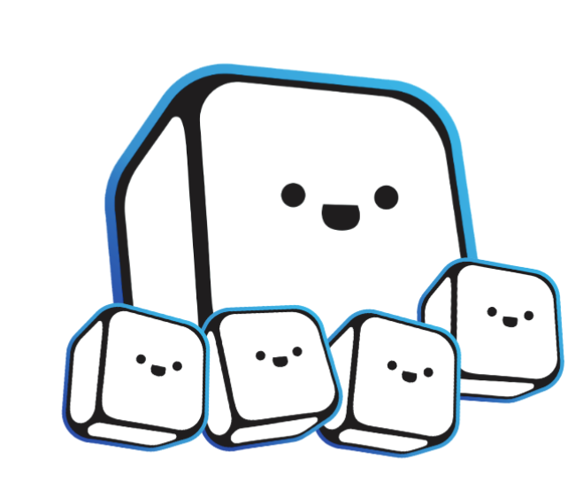

One of the many things I do is work for a non-profit student run organization called Bit Project as a community manager. I started working for Bit November 2019 and I've been enjoying what I do so far. The image above is a version of the mascot that I designed during a design challenge for Bit.